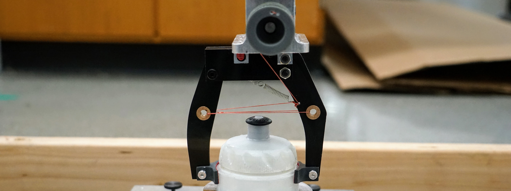
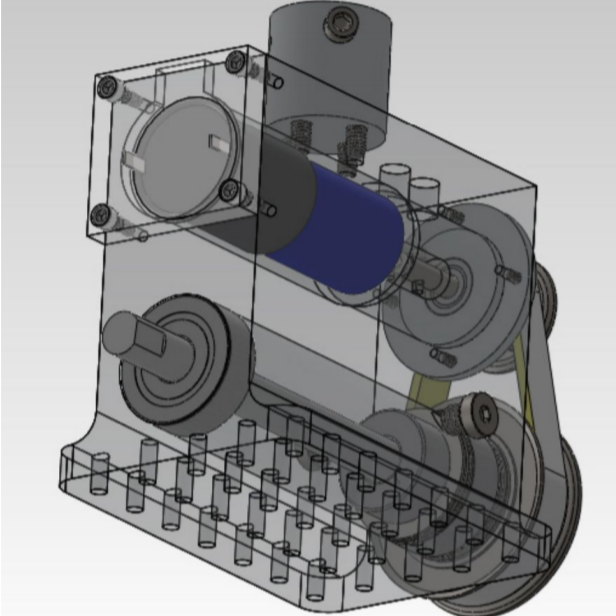
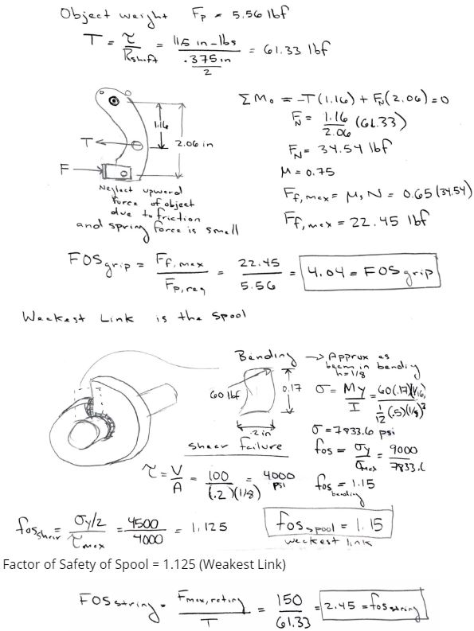

Design 1 Gripper Project
Project Description
 The objective of this project is to design and build a mechanism that would actuate in order to grip a supplied object when attached to a driven axle. The gripper would be mounted to a mounting plate that is at the base of the supplied motor assembly (pictured right). The gripper and object would then be swung from a 90 degree angle. After swinging, the object's location relative to its start would be measured, and if the object had displaced more than 0.1 inches in any direction, the gripper would not qualify. The performance of the gripper, past its ability to maintian control the object, would be determined by its weight.
The design had a couple major constraints that our gripper had to
follow.
Teammates
The Design Process
 The first decison that we made was that we would have one starionary arm, and one dynamic arm. This would allow for a much simpler design than one that had more than one moving arm. This design would also be significantly lighter than one that used more than two arms as we determined that we would be able to get sufficient stability simply from 2 arms.
One of the first major design decisons that we had to make, outside of the shape of the gripper and how many points of contact we would have, was the mechanim to both open and close the gripper. We decided to use a string mechanism for a couple important reasons. First, by not using gears and similar mechanisms, we limited the number of axles that we needed in our design. Axles and gears, we determined, were disproportionately heavy for the benefits that they offered over something like a string. Additionally, by using a string, we were able to actuate the arm closer to the object. This allowed more of the force in the string to be translated to the object vs. a gear that actuated the arm near its rotational axle.
As a group, we decided that we would produce a heavy, yet safe design for the first design review such that we could produce an extremely light gripper for the second round. We did this for a couple reasons:
- Because a significant portion of the grade was determined based on the performance of the gripper, we wanted to make sure that we had one that worked the first time. This would then allow us to push the limits with our second version as we would have a fall back gripper.
- With the carbon fiber sandwich being expensive and extremely tiresome to machine, we would be able to identify risks and points of failure in our design before switching to the carbon fiber sandwich.
- As a group, we had limited to no expirence with the carbon fiber sandwich which we were planning to use and therefore we had some fears that the carbon fiber sheets may not work the way we were expecting.
- There was an element of secrecy involved as we did not want other groups to be able to replicate our final gripper design. had we used the sandwich board in the first round, there could have been groups which procured their own sheets and it would make it much more difficult for us to be the lightest.
Manufacturing
Manufacturing was a major aspect to this project for a variety of reasons. Not only did we have to utalize advanced machining, such as the CNC mill, to produce the required geometries for the arms, but for our second version, we had to mill carbon fiber sheets which called for specific manufacturing processes. This allowed us to create geometries that were more condusive to the bending and loads that we expected durring the testing procedure.

Our idea to produce the lightest gripper in the class was centered around the usage of carbon fiber sandwich board for the main body of the gripper. The use of this material posed specific challenges regarding to the manufacturing of said parts. We had to search out specialized machines on campus that could handle the material without causing health risks. Once we were able to secure time on a machine, we were able to mill out each of our components using high frequency and rpm along with a downward spiral, two flute end mill for optimal results. Finally, once the parts were cleaned up a bit with a drill press, we applied two part epoxy along the edges of the parts which dramatically increased the rigidity of the foam core carbon fiber in off axis loading.
Design Review I
For the first design review, we produced a gripper that was mostly made of delrin, with some 3D printed parts, and some metal and plastic hardware. The spool that we 3D printed allowed us to interface with the motor and it allowed for two seperate strings: one which was the driving string, and a second which asted as a hardstop. Because of the increased radius due to the spool, we needed to loop our string through the arms such that they acted as pullies in order to get a satisfactory grip strength. The Dynamic arm was held up using a spring.
This design weighed a total of 134 grams, which was about 60 grams heavier than the lightest gripper from the first round.

For all the successes that this version represented, there were fundamental flaws in the design that would need to be addressed in order to have the lightest gripper.
- Ditch the Delrin. The weight of the delrin used in the gripper was 87 grams by itself. Replacing it with the carbon sandwich would save at least 80% of that weight.
- The spool, while functional was heavy at 16 grams and sometimes had a tendancy to get the seperate strings caught.
- The hardware that we used was also very heavy as a group. If we were to get down below 30 grams, we would need to replace the metal harware with their nylon counterparts, or simply reduce the amount of hardware that we used.
- The path that the string took was causing a fairly large off axis moment to occur in the arm. While this was not a huge issue for the delrin, once we switched to the carbon fiber sandwich, it could easily cause catistrophic failure.
Final Design
With these challenges in mind we began the process to alter our gripper and when the carbon fiber was being milled, our attention turned to the spool and the string path. For the spool, we came up with a very elegant solution in which the spool acts like a one way ratchet. In addition, we designed a spacer such that the string could travel through the mounting base and down to the arm. This would eleviate the off axis bending found in the static arm.
These adjustments, along with the increased use of adhesives, switching out the delrin, and minimizing the metal used in the gripper allowed us to pruduce a working gripper that only weighed 23.4 grams.
This weight was a significant achievement, not only for the improvement that we showed from our first version, but the class average was 150 grams and the next closest gripper was 40 grams.